본 포스트는 Youngwoon Lee 교수님의 Deep Reinforcement Learning 강의 자료 중 Lecture 02-1 — Reinforcement Learning Basics (총 41장)을 바탕으로, 강의를 처음 듣는 독자도 논리적 흐름을 따라갈 수 있도록 재구성한 것입니다. 원본 슬라이드는 영문으로 작성되어 있으며, 본문의 대섹션 구분은 강의 중간중간 반복해서 등장하는 Plan for today 슬라이드의 목차(Course logistics review → Imitation learning recap → RL formalization)를 그대로 따랐습니다. 강의 자료가 밝힌 계보는 Sutton & Barto의 Reinforcement Learning: An Introduction (2nd edition), Stanford CS 224R(Finn & Hausman), UC Berkeley CS 285(Levine)입니다.
한 줄 요약 (TL;DR)
“강화학습을 풀기 전에 먼저 할 일은 ’환경’이 무엇인지를 수학적으로 못 박는 것이고, 그 답이 마르코프 결정 과정(MDP)입니다.”
지난 회차의 모방학습은 전문가의 시연을 지도학습으로 흉내 내는 값싼 출발점이었지만, 오차 누적·다봉성·관측 불일치라는 세 지점에서 무너졌고 무엇보다 전문가를 넘어설 수 없다는 상한이 있었습니다. 이번 회차는 그 대안인 강화학습을 다루기 위해, 먼저 문제 자체를 형식화합니다. 핵심은 환경(environment)을 정의하는 것이 곧 문제를 정의하는 것이라는 관점입니다. 강의는 확률 과정 → 마르코프 성질 → 마르코프 과정 → 마르코프 보상 과정 → 마르코프 결정 과정이라는 다섯 단계의 사다리를 한 칸씩 올라가며 MDP를 조립하고, 그 위에서 정책 \(\pi(\mathbf{a}_t \mid \mathbf{s}_t)\)를 찾아 누적 보상 \(\sum_t r_t\)를 최대화하는 것으로 강화학습을 정의합니다. 마지막으로 MDP는 정의상 주어져 있지만 실제로는 전이 확률을 알 수 없다는 점, 그리고 현실 세계는 대개 완전 관측 가능하지 않다는 점 — 강화학습이 실제로 어려운 두 가지 이유 — 을 짚고, Ant · League of Legends · 로봇 · 챗봇이라는 네 사례로 같은 형식이 얼마나 다른 문제들을 담아내는지 확인합니다.
1. 강의 운영 안내 (Course Logistics Review)
강의는 본론에 들어가기 전에 운영 방침을 한 번 정리하고 넘어갑니다. 학습 내용과 직접 관련은 없지만, 이 강의를 따라가는 데 필요한 약속들이므로 함께 옮겨 둡니다.
1.1 성적 평가 (Grading Policy)
| 항목 | 비중(%) |
|---|---|
| 과제(Homework) | 35 |
| 중간고사(Midterm exam) | 30 |
| 기말고사(Final exam) | 30 |
| 출석(Attendance) | 3 |
| 참여(Participation) | 2 |
| 합계 | 100 |
- 과제는 총 7회이며, 각 과제가 성적의 5%를 차지합니다.
- 늦게 제출할 수 있는 기간(late days)은 학기 전체를 통틀어 3일입니다.
- 중간·기말고사는 모두 closed-book입니다.
1.2 중간·기말고사 (Midterm and Final Exams, 각 30%)
- Closed-book으로 치릅니다.
- 영어로만(English only) 출제·응답합니다.
- 50문항 이상이며, 대략 참/거짓 20문항 + 단답형 25문항 + 객관식 5문항의 구성입니다.
- 일정
- 중간고사: 10월 24일(토) 오전 10시–12시
- 기말고사: 12월 12일(토) 오전 10시–12시
1.3 출석 (Attendance, 3%)
- 전자출결 시스템(electronic attendance system)을 사용합니다. 전자출결에 실패했다면 즉시, 직접 만나서 알려야 합니다.
- 결석에 정당한 사유가 있다면 전자출결 시스템을 통해 최대한 빨리 사유서를 제출합니다.
- 사유를 작성할 것
- 유효한 증빙을 첨부할 것 — 의사 처방전, 예비군·민방위 훈련 확인서, 학회 배지 등
- 서류는 제대로 스캔할 것
- 여러 이유로 반려될 수 있으므로, 그런 경우에는 교수님과 직접 상의할 것
1.4 참여 (Participation, 2%)
- 강의는 참여가 효과적인 학습의 필수 조건이라는 점을 명시합니다.
- 참여로 인정되는 활동
- 수업 중 Q&A와 토론 — 강의가 끝난 뒤의 질문이나 운영 관련 질문은 해당하지 않습니다.
- 온라인 토론 게시판(Ed)에서의 채택된 답변(endorsed answers)과 정보 공유
- 적극적으로 참여하면 2점, 참여가 거의 또는 전혀 없으면 0점입니다.
1.5 정보와 자료 (Information & Resources)
- eTL: 정기적으로 확인할 것
- Email: 공지가 이메일로 오가는 경우가 많으므로 자주 확인할 것
- TA: Minwoo Kim
- Ed: 강의·과제·시험에 대한 Q&A 창구 (가입에는 SNU 이메일 계정이 필요합니다)
- Office hours: 매주 화요일 12:30pm, 302동 430호 — 또는 이메일
1.6 강의가 참고한 자료 (References)
이 강의의 슬라이드와 자료 상당수는 다음에서 왔습니다.
- Sutton and Barto. Reinforcement Learning: An Introduction (2nd edition)
- Finn and Hausman. Stanford CS 224R Deep Reinforcement Learning
- Levine. UC Berkeley CS 285 Deep Reinforcement Learning
2. 모방학습 복습 (Imitation Learning Recap)
새 형식화로 넘어가기 전에, 지난 회차에서 다룬 모방학습을 다섯 장면으로 되짚습니다. 이 복습의 목적은 단순한 요약이 아니라 “왜 강화학습이 필요한가”를 다시 세우는 데 있습니다.
2.1 의사결정 문제 (Decision Making Problem)
강화학습이든 모방학습이든, 우리가 푸는 것은 하나의 의사결정 문제입니다.
- 입력(Input): 상태 \(\mathbf{s}\) (또는 관측 \(\mathbf{o}\))
- 출력(Output): 행동 \(\mathbf{a}\)
- 모델(Model): 정책 \(\pi_\theta\)
- 목표(Objective): 주어진 상태들에 대해 최적의 행동 열(optimal sequence of actions)을 찾는 것
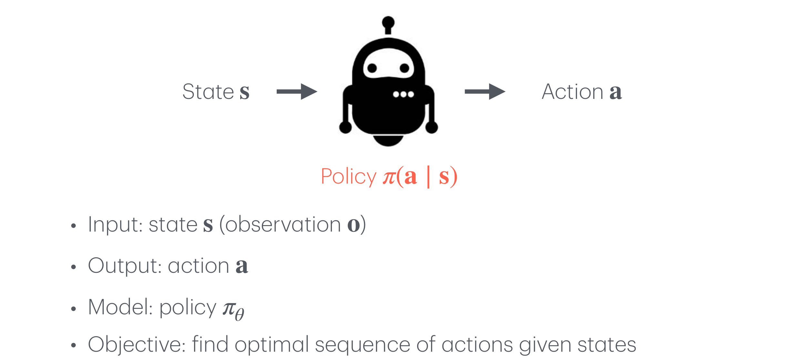
2.2 행동 복제 (Behavioral Cloning)
행동 복제(behavioral cloning, BC)는 이 정책을 지도학습으로 학습시키는 가장 단순한 방법입니다.
- 핵심 아이디어: 정책을 지도학습으로 훈련한다.
- 데이터: 전문가의 의사결정 기록, 즉 시연(demonstrations) \(\mathcal{D} = \{(\mathbf{s}_0, \mathbf{a}_0), (\mathbf{s}_1, \mathbf{a}_1), \ldots\}\)
- 모델: 상태 \(\mathbf{s}\)를 입력받아 행동 \(\mathbf{a}\)를 출력하는 신경망 \(\pi_\theta\)
- 손실: 행동이 이산이면 교차 엔트로피(cross-entropy), 연속이면 L1/L2 손실
\[ \min_\theta \; -\mathbb{E}_{(\mathbf{s}, \mathbf{a}) \sim \mathcal{D}}\left[\log \pi_\theta(\mathbf{a} \mid \mathbf{s})\right] \]
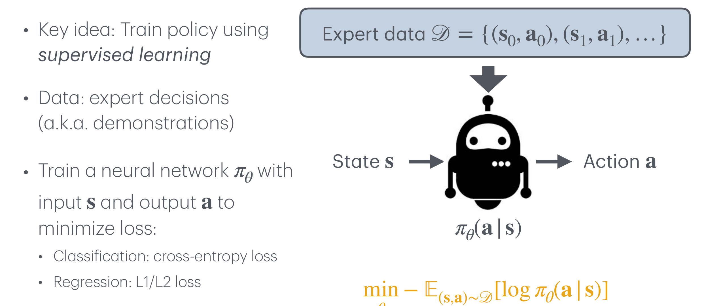
2.3 모방학습에서 무엇이 잘못될 수 있는가 (What Can Go Wrong in Imitation Learning?)
강의는 모방학습의 실패 지점을 세 가지로 정리합니다.
- 오차 누적(compounding errors) — 정책의 출력이 다음 상태를 바꾸므로, 한 번의 작은 오차가 학습 분포 바깥의 상태로 데려가고 거기서 더 큰 오차가 나는 악순환이 생깁니다.
- 다봉 시연 데이터(multimodal demonstration data) — 같은 상황에서 전문가가 여러 갈래의 정답을 보였다면, 단봉 분포를 가정한 정책은 그 평균을 택해 어느 쪽도 아닌 행동을 냅니다.
- 전문가와 에이전트 간 관측 가능성 불일치(mismatch in observability) — 전문가가 보고 있던 정보를 에이전트는 볼 수 없다면, 같은 관측에 대해 전문가의 행동은 설명 불가능한 것이 됩니다.
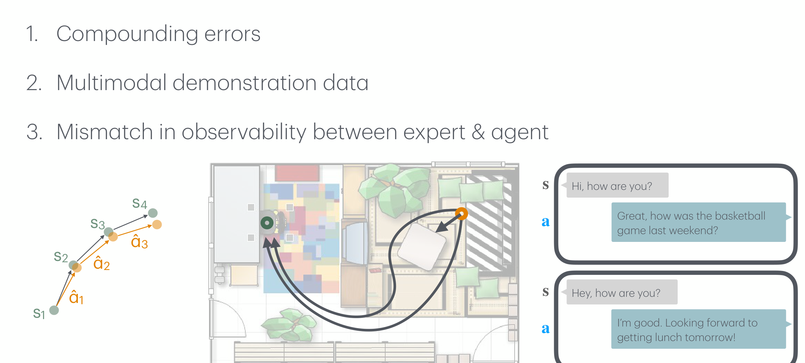
2.4 DAgger로 오차 누적에 대응하기 (Addressing Compounding Errors with DAgger)
오차 누적의 원인이 학습 분포와 실행 분포의 어긋남이라면, 처방은 에이전트가 실제로 방문하는 상태에서 정답을 받아 오는 것입니다. 이것이 DAgger(dataset aggregation)의 발상입니다.
온라인(online)으로 교정 데이터를 수집합니다.
- 학습된 정책 \(\pi_\theta\)를 롤아웃한다: \(\mathbf{s}'_1, \hat{\mathbf{a}}_1, \ldots, \mathbf{s}'_T\)
- 방문한 상태들에서 전문가의 행동을 질의한다: \(\mathbf{a}^* \sim \pi_\text{expert}(\,\cdot \mid \mathbf{s}')\)
- 교정 데이터를 기존 데이터에 합친다: \(\mathcal{D} \leftarrow \mathcal{D} \cup \{(\mathbf{s}', \mathbf{a}^*)\}\)
- 정책을 갱신한다: \(\min_\theta \mathcal{L}(\pi_\theta, \mathcal{D})\)
- 장점(+): 전문가로부터 배우는 데이터 효율적인 방법입니다.
- 단점(−): 에이전트가 제어권을 쥐고 있는 상태에서 전문가에게 질의하기가 어렵습니다. 자율주행 차량이 달리는 동안 사람에게 “지금 이 순간 당신이라면 핸들을 얼마나 돌렸겠는가”를 계속 묻는 상황을 떠올리면 됩니다.
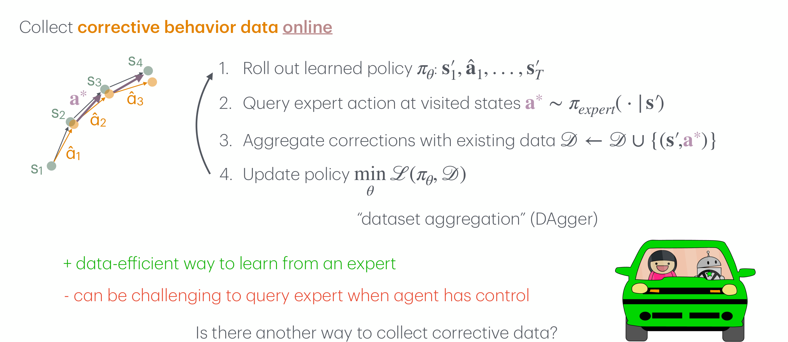
2.5 제어권을 넘겨받는 방식 (Human-Gated DAgger)
앞의 단점 — “제어 중인 에이전트에게 전문가 질의를 붙이기 어렵다” — 에 대한 답이 human-gated DAgger입니다. 전문가가 매 순간 정답을 부르는 대신, 잘못됐다 싶을 때 제어권을 통째로 넘겨받아 직접 시연합니다.
전문가가 완전한 제어권을 넘겨받으면서(taking full control) 교정 데이터를 수집합니다.
- 학습된 정책 \(\pi_\theta\)의 롤아웃을 시작한다: \(\mathbf{s}'_1, \hat{\mathbf{a}}_1, \ldots, \mathbf{s}'_t\)
- 정책이 실수를 저지르는 시점 \(t\)에 전문가가 개입한다
- 전문가가 (부분) 시연을 제공한다: \(\mathbf{s}'_t, \mathbf{a}^*_t, \ldots, \mathbf{s}'_T\)
- 새 시연을 기존 데이터에 합친다: \(\mathcal{D} \leftarrow \mathcal{D} \cup \{(\mathbf{s}'_i, \mathbf{a}^*_i)\}; \; i \geq t\)
- 정책을 갱신한다: \(\min_\theta \mathcal{L}(\pi_\theta, \mathcal{D})\)
이 방식은 자율성을 사람과 에이전트가 주고받는다는 뜻에서 traded autonomy 또는 shared autonomy라고도 불립니다.
- 장점(+): 교정을 제공하는 인터페이스가 (훨씬) 쉽습니다. 매 스텝의 정답을 부르는 대신 조종간을 잡으면 됩니다.
- 단점(−): 일부 응용 영역에서는 실수를 빠르게 포착하기가 어렵습니다. 사람이 “지금이 개입할 때”라고 알아차릴 때는 이미 늦었을 수 있습니다.
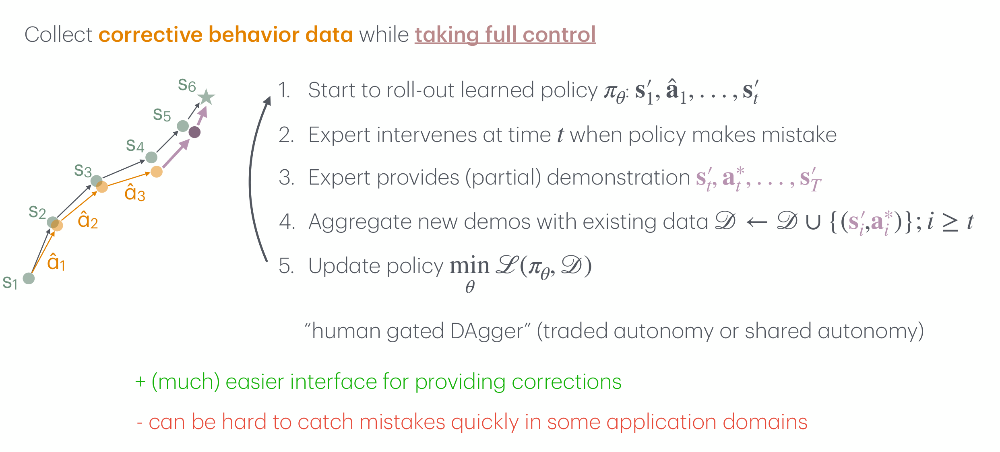
DAgger 계열은 오차 누적을 상당히 완화하지만, 모방학습의 본질적인 상한을 없애 주지는 못합니다. 학습 신호가 전적으로 전문가의 행동이기 때문에, 잘 학습된 정책이 도달할 수 있는 최선은 전문가와 같아지는 것입니다.
강화학습이 필요한 이유가 여기 있습니다. 학습 신호를 “전문가가 무엇을 했는가”에서 “결과가 얼마나 좋았는가”로 바꾸면, 아무도 시연해 준 적 없는 행동도 평가할 수 있게 됩니다. 다만 그렇게 하려면 “결과가 좋다”는 말이 무슨 뜻인지를 먼저 형식화해야 합니다 — 그것이 3절의 내용입니다.
3. 강화학습의 형식화 (RL Formalization)
3.1 강화학습이란 무엇인가 (What is Reinforcement Learning?)
강의는 위키피디아의 정의에서 출발합니다. 요지는 이렇습니다 — 강화학습(reinforcement learning, RL)은 지능적 에이전트(agent)가 동적인 환경(dynamic environment) 안에서 누적 보상(cumulative reward)을 최대화하기 위해 어떤 행동(action)을 취해야 하는지를 다루는 분야입니다.
이 한 문장에서 강조된 조각들이 그대로 형식화의 목록이 됩니다.
- 에이전트(agent) — 학습하고 결정하는 주체
- 동적인 환경(dynamic environment) — 행동에 반응해 변하는 세계
- 누적(cumulative) — 한 시점의 이득이 아니라 시간에 걸친 총합
- 보상(reward) — 좋고 나쁨을 재는 척도
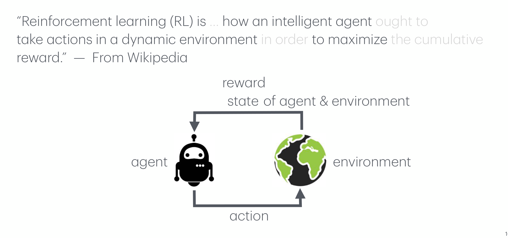
3.2 강화학습 문제를 어떻게 형식화할 것인가 (How Can We Formalize RL Problems?)
같은 그림에 기호를 붙이면 형식화의 초안이 됩니다.
- 에이전트는 시점 \(t\)에 상태 \(\mathbf{s}_t\)를 보고 정책 \(\pi(\mathbf{a}_t \mid \mathbf{s}_t)\)에 따라 행동 \(\mathbf{a}_t\)를 냅니다.
- 환경은 그 행동에 대해 보상 \(r_t \sim p(r_t \mid \mathbf{s}_t, \mathbf{a}_t)\)와 다음 상태 \(\mathbf{s}_{t+1} \sim p(\mathbf{s}_{t+1} \mid \mathbf{s}_t, \mathbf{a}_t)\)를 돌려줍니다.
- 이 순환이 남기는 기록이 \((\mathbf{s}_0, \mathbf{a}_0, r_0), (\mathbf{s}_1, \mathbf{a}_1, r_1), \ldots\) 라는 열입니다.
\[ \text{Find } \pi(\mathbf{a}_t \mid \mathbf{s}_t) \text{ that maximizes } \sum_t r_t \]
누적 보상 \(\sum_t r_t\)를 최대화하는 정책을 찾는 것 — 이 한 줄이 강화학습의 목표 전부입니다. 남은 문제는 두 가지뿐입니다. 첫째, \(p(r_t \mid \mathbf{s}_t, \mathbf{a}_t)\)와 \(p(\mathbf{s}_{t+1} \mid \mathbf{s}_t, \mathbf{a}_t)\)가 무엇인지 — 즉 환경을 어떻게 정의할 것인가. 둘째, 그 환경 위에서 이 최적화를 어떻게 풀 것인가. 이번 회차는 전자만 다루고, 후자는 다음 회차의 정책 경사법(policy gradient)에서 시작합니다.
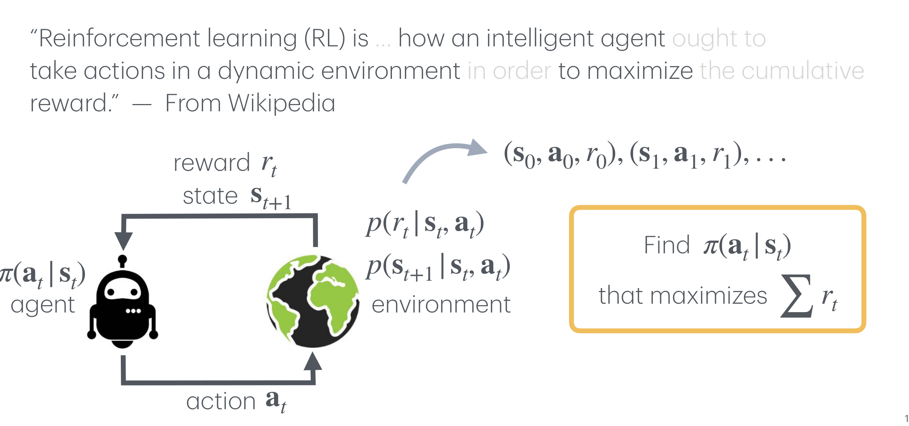
3.3 마르코프 결정 과정 (Markov Decision Process)
마르코프 결정 과정(Markov decision process, MDP)은 강화학습의 환경을 형식적으로 정의합니다.
여기서 말하는 환경은 물리적인 세계만이 아니라 환경 + 과제(task, 즉 보상)를 합친 것입니다. 같은 로봇 팔과 같은 물리 법칙이라도 “물건을 집어라”와 “물건을 밀어라”는 서로 다른 MDP입니다 — 보상 함수가 다르기 때문입니다.
강의는 MDP를 한 번에 던지지 않고, 이름을 이루는 세 단어를 뒤에서부터 하나씩 되짚으며 조립합니다. Process → Markov → Reward → Decision 순서입니다.
3.3.1 확률 과정 (Random Process)
가장 바깥 껍질인 Process부터 시작합니다.
- 확률 과정(random process, stochastic process)은 시간(또는 어떤 지표 집합)으로 색인된 확률변수들의 모임입니다.
- 달리 말하면 확률적 상태들의 열입니다.
\[ \{\mathbf{s}_t\}_{t \in T = [0, \infty)} \]
3.3.2 마르코프 성질 (Markov Property)
다음 껍질은 Markov입니다. 확률 과정 일반은 다루기가 너무 넓으므로, 강력하지만 자연스러운 제약을 하나 겁니다.
상태 \(\mathbf{s}_t\)가 마르코프(Markov)라는 것은 다음이 성립한다는 뜻이며, 이는 필요충분조건입니다.
\[ p(\mathbf{s}_{t+1} \mid \mathbf{s}_t) = p(\mathbf{s}_{t+1} \mid \mathbf{s}_1, \ldots, \mathbf{s}_t) \]
강의는 이 성질을 네 가지 표현으로 바꿔 말합니다.
- 현재가 주어지면 미래는 과거와 독립이다.
- 미래 상태는 오직 현재 상태에만 의존한다.
- 상태가 역사의 모든 관련 정보를 담고 있다.
- 상태를 알고 나면 역사는 버려도 된다.
이 성질을 “세상이 단순하다”는 가정으로 오해하기 쉽지만, 정확히는 상태를 어떻게 정의했는가에 대한 요구입니다. 위 네 번째 표현 — “상태를 알고 나면 역사는 버려도 된다” — 이 그 점을 잘 드러냅니다.
예를 들어 움직이는 공의 위치만을 상태로 삼으면 다음 위치를 예측할 수 없어 마르코프가 아니지만, 위치와 속도를 함께 상태로 삼으면 마르코프가 됩니다. 세계가 바뀐 것이 아니라 상태의 정의가 바뀐 것입니다. 마르코프 성질이 깨지는 문제를 만났을 때 첫 번째로 해 볼 일은 상태에 무엇이 빠졌는지 묻는 것입니다.
3.3.3 마르코프 과정 (Markov Process)
두 껍질을 합치면 첫 번째 완성된 대상이 나옵니다.
마르코프 과정(또는 마르코프 연쇄)은 다음 튜플입니다.
\[ \langle S, \; p(\mathbf{s}_{t+1} \mid \mathbf{s}_t) \rangle \]
- \(S\)는 상태들의 집합
- \(p(\mathbf{s}_{t+1} \mid \mathbf{s}_t)\)는 상태 전이 확률(state transition probability)
즉 마르코프 성질을 따르는 확률 과정 = 기억이 없는(memoryless) 확률 과정입니다.
강의는 이를 대학원생의 하루라는 친숙한 예로 보여 줍니다.
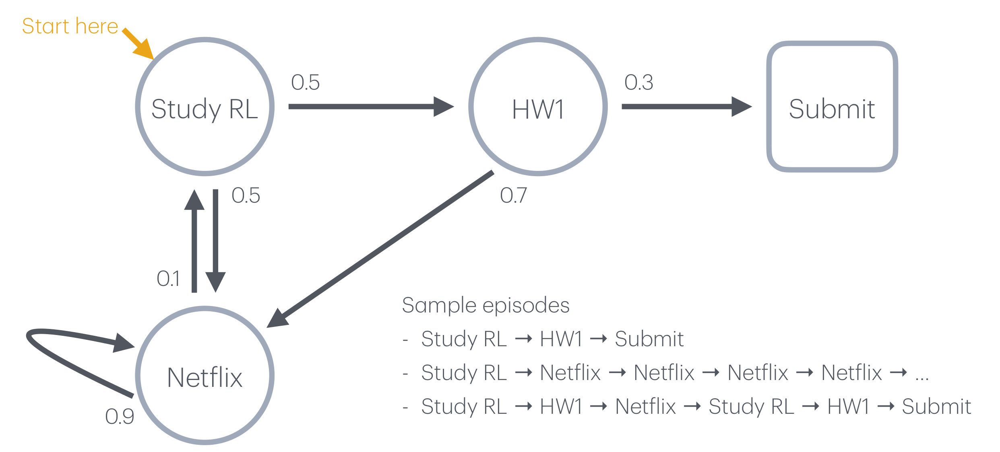
3.3.4 마르코프 보상 과정 (Markov Reward Process)
마르코프 과정에는 좋고 나쁨의 개념이 없습니다. 보상을 얹으면 평가가 가능해집니다.
마르코프 보상 과정(MRP)은 다음 튜플입니다.
\[ \langle S, \; p(\mathbf{s}_{t+1} \mid \mathbf{s}_t), \; r(\mathbf{s}_t), \; \gamma \rangle \]
- \(S\)는 상태들의 집합
- \(p(\mathbf{s}_{t+1} \mid \mathbf{s}_t)\)는 상태 전이 확률
- \(r(\mathbf{s}_t)\)는 보상 함수(reward function) — 새로 추가된 항
- \(\gamma\)는 할인율(discount factor), \(\gamma \in [0, 1]\) — 새로 추가된 항
즉 보상이 딸린 마르코프 과정입니다.
보상을 도입하는 순간 “총 보상”이라는 양을 정의해야 하는데, 앞의 Netflix 자기 루프처럼 끝나지 않는 궤적이 있으면 단순한 합 \(\sum_t r_t\)가 발산할 수 있습니다. \(\gamma < 1\)을 곱해 \(\sum_t \gamma^t r_t\)로 정의하면, 보상이 유계인 한 이 급수는 등비급수로 눌려 항상 수렴합니다.
\(\gamma\)는 계산적 편의만이 아니라 해석도 갖습니다 — 지금의 1점이 나중의 1점보다 낫다는 선호를 나타내며, \(\gamma\)가 0에 가까울수록 근시안적인, 1에 가까울수록 멀리 내다보는 목표가 됩니다.
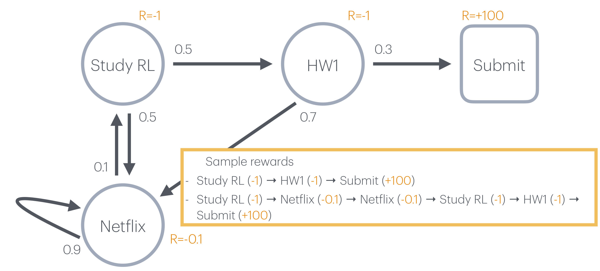
3.3.5 마르코프 결정 과정 (Markov Decision Process)
마지막 껍질은 Decision입니다. 지금까지는 상태가 확률에 따라 굴러갈 뿐 우리가 개입할 여지가 없었습니다. 행동을 넣으면 비로소 의사결정 문제가 됩니다.
마르코프 결정 과정(MDP)은 다음 튜플입니다.
\[ \langle S, \; A, \; p(\mathbf{s}_{t+1} \mid \mathbf{s}_t, \mathbf{a}_t), \; r(\mathbf{s}_t, \mathbf{a}_t), \; \gamma \rangle \]
- \(S\)는 상태들의 집합
- \(A\)는 행동들의 집합 — 새로 추가된 항
- \(p(\mathbf{s}_{t+1} \mid \mathbf{s}_t, \mathbf{a}_t)\)는 상태 전이 확률, 이제 행동에도 조건부입니다
- \(r(\mathbf{s}_t, \mathbf{a}_t)\)는 보상 함수, 이제 행동에도 의존합니다
- \(\gamma\)는 할인율, \(\gamma \in [0, 1]\)
즉 의사결정이 딸린 마르코프 보상 과정이며, 동시에 모든 상태가 마르코프인(즉 완전 관측 가능한, fully observable) 환경입니다.
MRP에서 MDP로 올 때 바뀐 것을 표로 정리하면 다음과 같습니다.
| 구성 요소 | 마르코프 과정 | 마르코프 보상 과정 | 마르코프 결정 과정 |
|---|---|---|---|
| 상태 집합 \(S\) | ✅ | ✅ | ✅ |
| 전이 확률 | \(p(\mathbf{s}_{t+1} \mid \mathbf{s}_t)\) | \(p(\mathbf{s}_{t+1} \mid \mathbf{s}_t)\) | \(p(\mathbf{s}_{t+1} \mid \mathbf{s}_t, \mathbf{a}_t)\) |
| 보상 함수 | — | \(r(\mathbf{s}_t)\) | \(r(\mathbf{s}_t, \mathbf{a}_t)\) |
| 할인율 \(\gamma\) | — | ✅ | ✅ |
| 행동 집합 \(A\) | — | — | ✅ |
| 할 수 있는 일 | 관찰 | 관찰 + 평가 | 관찰 + 평가 + 개입 |
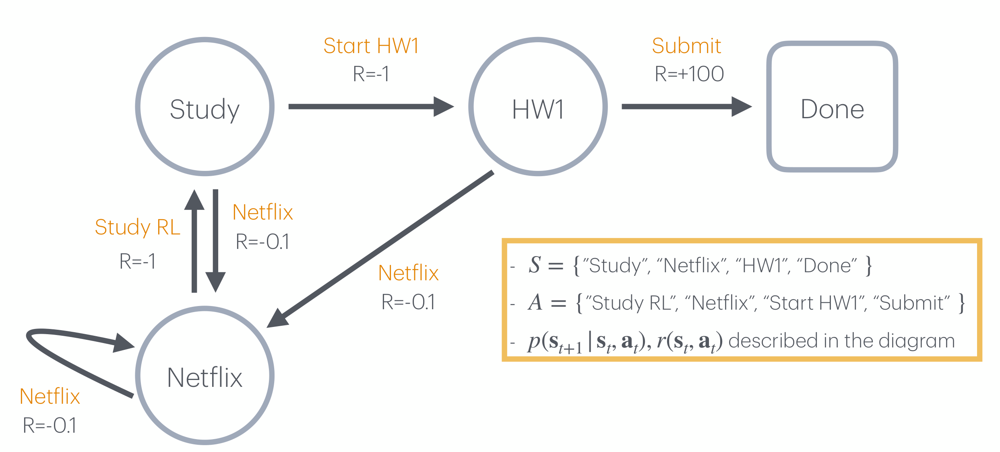
3.3.6 정책과 MDP의 경계 (Policy)
MDP가 환경을 완전히 정의한다면, 그 안에서 에이전트가 담당하는 부분은 무엇일까요? 답은 정책입니다.
- 정책은 에이전트의 행동 방식(behavior of an agent)을 완전히 정의합니다.
- MDP에서 정책은 오직 현재 상태에만 의존합니다 — 역사(history)에는 의존하지 않습니다.
두 번째 항목은 마르코프 성질의 직접적인 귀결입니다. 상태가 이미 역사의 모든 관련 정보를 담고 있으므로, 역사를 더 들여다봐야 할 이유가 없습니다. 그래서 정책을 \(\pi(\mathbf{a}_t \mid \mathbf{s}_1, \ldots, \mathbf{s}_t)\)가 아니라 \(\pi(\mathbf{a}_t \mid \mathbf{s}_t)\)로 쓸 수 있는 것입니다.
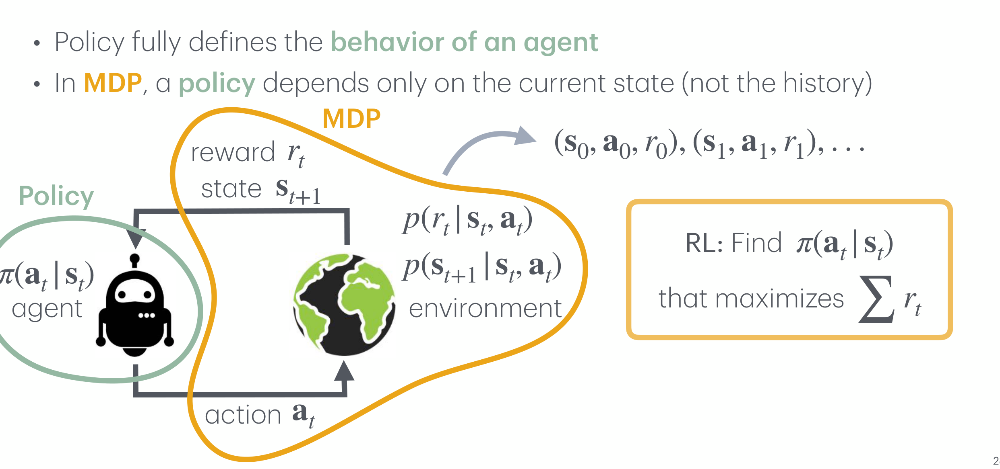
3.3.7 초기 상태 분포 (Initial State Distribution)
MDP의 정의에는 한 항이 더 붙습니다. 어디에서 시작하는가입니다.
\[ \langle S, \; A, \; p(\mathbf{s}_0), \; p(\mathbf{s}_{t+1} \mid \mathbf{s}_t, \mathbf{a}_t), \; r(\mathbf{s}_t, \mathbf{a}_t), \; \gamma \rangle \]
- \(S\)는 상태들의 집합
- \(A\)는 행동들의 집합
- \(p(\mathbf{s}_0)\)는 초기 상태 분포(initial state distribution) — 새로 추가된 항
- \(p(\mathbf{s}_{t+1} \mid \mathbf{s}_t, \mathbf{a}_t)\)는 상태 전이 확률
- \(r(\mathbf{s}_t, \mathbf{a}_t)\)는 보상 함수
- \(\gamma\)는 할인율, \(\gamma \in [0, 1]\)
전이 확률이 “여기서 저기로 어떻게 가는가”를 정한다면, 초기 상태 분포는 “애초에 어디에 놓이는가”를 정합니다. 이 항이 없으면 궤적의 확률을 계산할 수 없습니다 — 실제로 궤적의 결합 확률은 다음과 같이 \(p(\mathbf{s}_0)\)에서 시작해 전이와 정책을 번갈아 곱해 나가는 형태이기 때문입니다.
\[ p(\tau) = p(\mathbf{s}_0) \prod_{t} \pi(\mathbf{a}_t \mid \mathbf{s}_t) \, p(\mathbf{s}_{t+1} \mid \mathbf{s}_t, \mathbf{a}_t) \]
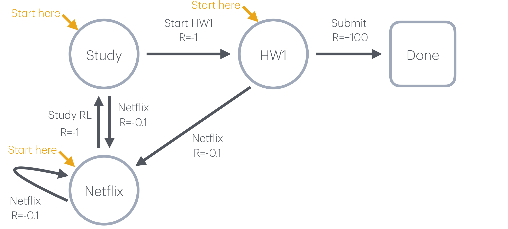
3.4 상태와 행동의 예 (Examples of States and Actions)
\(S\)와 \(A\)가 추상적으로 느껴진다면, 실제 문제에서 이들이 무엇으로 채워지는지 보는 편이 빠릅니다.
| 문제 | 상태 \(\mathbf{s}\) | 행동 \(\mathbf{a}\) |
|---|---|---|
| 바둑 | 반상(board) | 다음 착점 위치 |
| 로봇 팔 조작 | 물체의 자세(object poses), 로봇 관절 각도 | 엔드 이펙터 자세(end-effector pose), 그리퍼 개폐 정도 |
| 휴머노이드 운반 | 카메라 영상, 촉각 감지(touch sensing), 로봇 관절 각도 | 관절 토크(joint torques) |
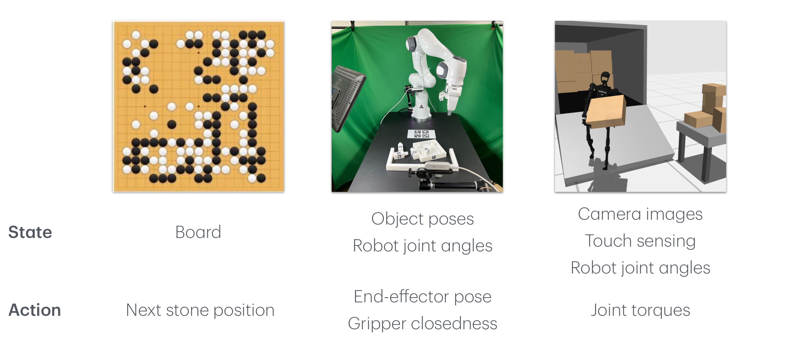
3.5 MDP는 주어져 있지만, 대개 알 수 없다 (MDP is Given, but Often Unknown)
여기서 강화학습을 어렵게 만드는 첫 번째 사실이 등장합니다.
MDP는 문제를 정의합니다. 즉 \(p(\mathbf{s}_{t+1} \mid \mathbf{s}_t, \mathbf{a}_t)\)와 \(r(\mathbf{s}_t, \mathbf{a}_t)\)는 존재하고 고정되어 있습니다. 그러나 그것이 에이전트가 그 함수의 형태를 안다는 뜻은 아닙니다.
강의의 표현대로 “MDP is given, but often unknown”입니다. 이 구분을 놓치면 뒤에 나올 모형 기반(model-based)과 모형 없는(model-free) 방법의 갈림길을 이해할 수 없습니다.
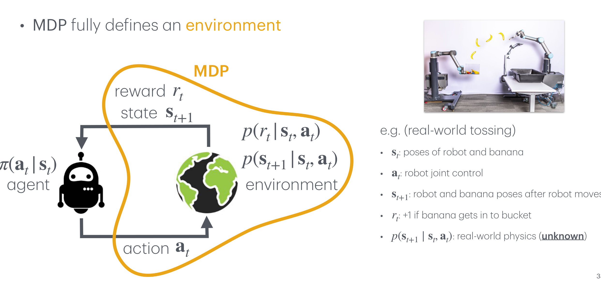
이 사정은 시뮬레이션에서도 똑같습니다. 강화학습 코드를 처음 짤 때 마주치는 네 줄이 그 사실을 그대로 드러냅니다.
env = gym.make("Ant-v4") # MDP 하나를 고른다
s = env.reset() # s0 ~ p(s0): 초기 상태를 뽑는다
a = agent(s).sample() # a ~ pi(a|s): 정책에서 행동을 뽑는다
s_next, r, done, _ = env.step(a) # 환경이 s_{t+1}과 r_t를 돌려준다env.reset()이 하는 일이 정확히 초기 상태 분포 \(p(\mathbf{s}_0)\)에서 표본을 뽑는 것이고,env.step(a)가 하는 일이 \(p(\mathbf{s}_{t+1} \mid \mathbf{s}_t, \mathbf{a}_t)\)와 \(p(r_t \mid \mathbf{s}_t, \mathbf{a}_t)\)에서 표본을 뽑는 것입니다.- 그리고 강의가 강조하듯, 에이전트는
env.step(a)안에서 무슨 일이 벌어지는지 알지 못합니다. 에이전트가 접근할 수 있는 것은 그 함수의 정의가 아니라 그것이 뱉어 낸 표본뿐입니다.
전이 확률을 알고 있다면 이것은 강화학습이 아니라 동적 계획법(dynamic programming) 문제입니다 — 환경을 머릿속에서 굴려 보며 최적 정책을 계산하면 됩니다. 전이 확률을 모르기 때문에 우리는 실제로 행동을 취해 보고 그 결과를 관찰하는 수밖에 없고, 여기서 탐색(exploration)이라는 강화학습 고유의 문제가 생겨납니다.
3.6 완전 관측 가능성이라는 가정 (Full Observability)
두 번째 어려움은 MDP의 정의 자체에 숨어 있습니다. MDP는 모든 상태가 마르코프인 환경, 즉 완전 관측 가능한(fully observable) 환경을 다룹니다.
강의가 드는 예는 “큰 그릇을 찾아라”입니다. 부엌 사진 한 장을 놓고 보면, 그릇이 어느 찬장 안에 있는지는 화면에 나타나 있지 않습니다. 현재 관측만으로는 다음에 무엇을 열어 봐야 할지 정할 수 없고, “이미 열어 본 찬장”이라는 역사가 필요합니다. 마르코프 성질이 깨지는 전형적인 상황입니다.
이런 환경은 부분 관측 마르코프 결정 과정(partially observable MDP, POMDP)으로 다루며, 강의는 이를 뒤에서 별도로 다루겠다고 예고합니다. 지난 회차에서 모방학습의 세 번째 실패 지점으로 나왔던 관측 가능성 불일치가 바로 이 문제의 다른 얼굴입니다.
3.7 강화학습 사례 (RL Examples)
지금까지 조립한 형식이 실제로 얼마나 넓은 문제들을 담는지, 네 가지 사례로 확인합니다. 네 사례 모두 동일한 튜플의 각 칸을 다른 내용으로 채운 것일 뿐입니다.
3.7.1 사례 1 — Ant
물리 시뮬레이터 위의 네 발 보행 로봇입니다. MDP의 모든 항이 명시적으로 주어지는, 가장 깔끔한 형태의 예입니다.
- \(S = \mathbb{R}^{27}\) — 몸통 속도, 높이, 관절 각도, 관절 각속도
- \(A = [-1.0,\, 1.0]^8\) — 관절 토크
- \(p(\mathbf{s}_0) =\) 고정 자세 + 균일 잡음(uniform noise)
- \(p(\mathbf{s}_{t+1} \mid \mathbf{s}_t, \mathbf{a}_t) =\) 물리 시뮬레이션
- \(r(\mathbf{s}_t, \mathbf{a}_t) =\) 생존 보상(healthy reward) + 전진 보상(forward reward) − 제어 비용(control cost)
- \(\gamma = 0.99\)
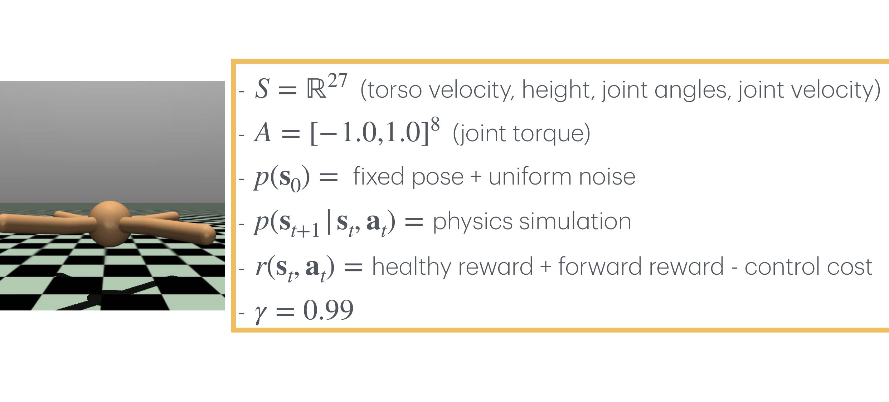
3.7.2 사례 2 — League of Legends
- 상태 \(\mathbf{s}\): 화면(screen), 소리(audio)
- 행동 \(\mathbf{a}\): 키보드·마우스 입력
- 보상 \(p(r_t \mid \mathbf{s}_t, \mathbf{a}_t)\): 승리 +1, 패배 −1, 레벨 업 +0.1, 포탑 파괴 +0.1, …
- 전이 \(p(\mathbf{s}_{t+1} \mid \mathbf{s}_t, \mathbf{a}_t)\): 게임 엔진 + 다른 사용자들
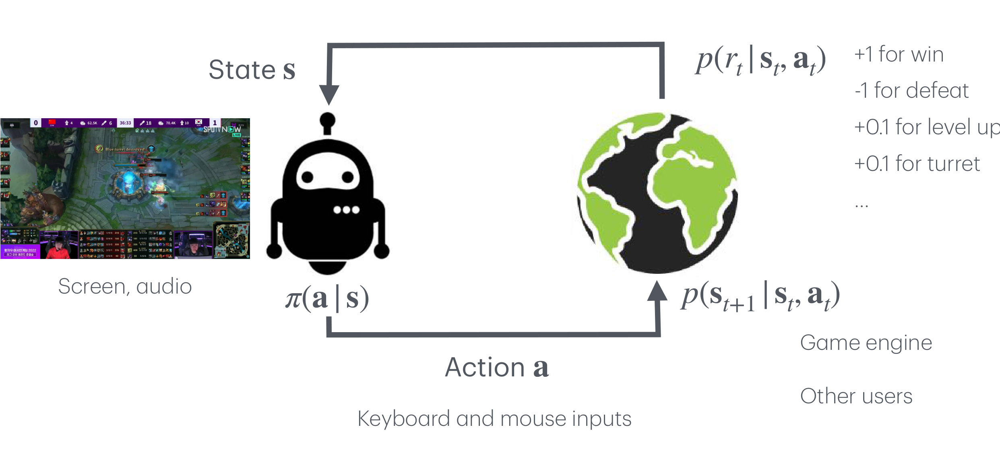
3.7.3 사례 3 — Robot
- 상태 \(\mathbf{s}\): 카메라 영상, 관절 자세 등
- 행동 \(\mathbf{a}\): 모터 전류 또는 토크
- 보상 \(p(r_t \mid \mathbf{s}_t, \mathbf{a}_t)\): 과제 측도(task measure)
- 전이 \(p(\mathbf{s}_{t+1} \mid \mathbf{s}_t, \mathbf{a}_t)\): 실세계 물리 — (알 수 없음)
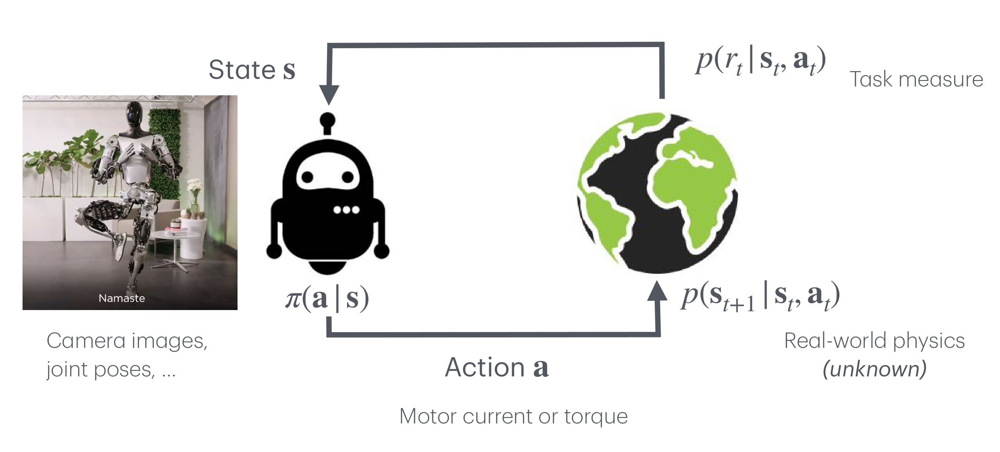
3.7.4 사례 4 — ChatBot
- 상태 \(\mathbf{s}\): 대화(conversations, 텍스트)
- 행동 \(\mathbf{a}\): 응답(response, 텍스트)
- 보상 \(p(r_t \mid \mathbf{s}_t, \mathbf{a}_t)\): 사람의 선호(human preference) — 좋으면 +1, 나쁘면 −1
- 전이 \(p(\mathbf{s}_{t+1} \mid \mathbf{s}_t, \mathbf{a}_t)\): 사용자 — (알 수 없음)
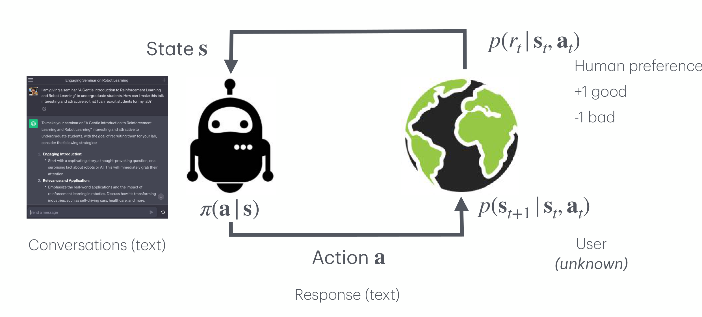
바둑판과 로봇 관절과 게임 화면과 대화 텍스트는 서로 아무런 공통점이 없어 보입니다. 그럼에도 네 문제 모두 \(\langle S, A, p(\mathbf{s}_0), p(\mathbf{s}_{t+1} \mid \mathbf{s}_t, \mathbf{a}_t), r(\mathbf{s}_t, \mathbf{a}_t), \gamma \rangle\)라는 여섯 칸을 채우는 일로 환원됩니다.
이것이 형식화의 값어치입니다. 문제를 MDP로 옮겨 놓기만 하면, 그 뒤에 쓰는 알고리즘은 문제가 무엇이었는지 알 필요가 없습니다. 반대로, MDP로 옮기는 작업(특히 보상 설계)이 잘못되면 그 뒤의 모든 알고리즘이 엉뚱한 것을 최적화하게 됩니다.
3.8 기본 용어 정리 (Basic Terminologies)
마지막으로, 지금까지 쓴 기호들을 한 장에 모아 정리합니다. 매 타임스텝 \(t = 0, 1, 2, \ldots\)에서 벌어지는 일은 다음과 같습니다.
| 기호 | 이름 | 같은 대상을 부르는 다른 이름 |
|---|---|---|
| \(\mathbf{s}_t\) | 상태(state) | 관측 \(\mathbf{o}\), 구성 \(\mathbf{x}\) |
| \(\mathbf{a}_t\) | 행동(action) | 제어 \(\mathbf{u}\) |
| \(\pi(\mathbf{a}_t \mid \mathbf{s}_t)\) | 정책(policy) | 에이전트, 전략, 제어기 |
| \(P(\mathbf{s}_{t+1} \mid \mathbf{s}_t, \mathbf{a}_t)\) | 세계(world) | 환경, 세계 동역학, 전이 동역학, 전이 확률 |
| \(\tau = (\mathbf{s}_0, \mathbf{a}_0, \mathbf{s}_1, \mathbf{a}_1, \ldots, \mathbf{s}_T)\) | 궤적(trajectory) | 정책 롤아웃(policy roll-out), 에피소드(episode) |
자료마다 표기 관습이 갈리므로, 같은 대상에 여러 이름이 붙어 있다는 사실 자체를 정리해 두면 이후의 혼란이 줄어듭니다.
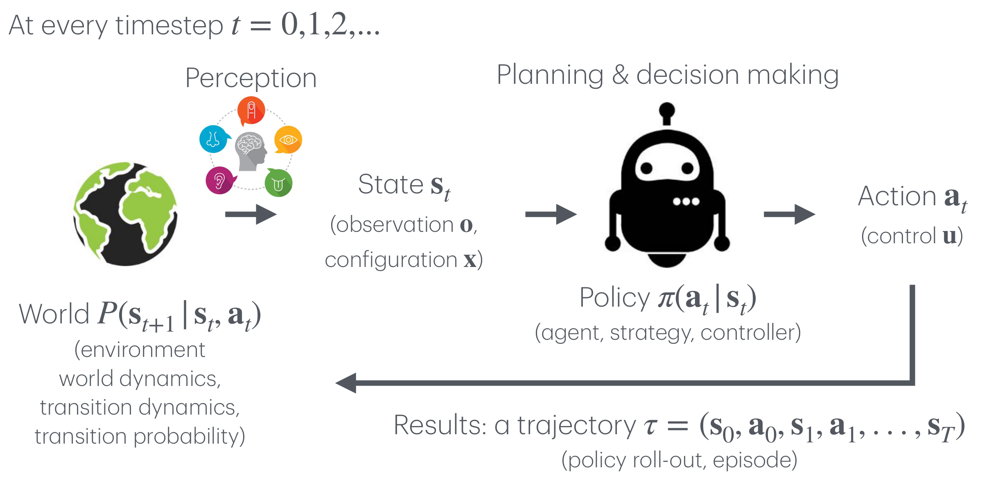
3.9 다음 강의 (Next Class)
강의는 다음 두 가지를 예고하며 마칩니다.
- 정책 경사법(policy gradient methods)
- 정책 경사에서 분산이 왜 문제가 되는가(Why variance matters in policy gradients?)
이번 회차가 “무엇을 최적화할 것인가”(\(\sum_t r_t\)를 최대화하는 \(\pi\))를 정의했다면, 다음 회차는 “그것을 어떻게 최적화할 것인가”에 답합니다. 그리고 두 번째 항목이 예고하듯, 그 답의 첫 형태는 작동은 하지만 분산이 너무 커서 실용적이지 않은 추정량이 될 것입니다.
정리하며 (Closing Remarks)
이번 강의의 논리 사슬을 한 장으로 요약하면 다음과 같습니다.
| 단계 | 내용 | 근거 |
|---|---|---|
| ① 출발점 확인 | 모방학습은 오차 누적·다봉성·관측 불일치로 무너지며, DAgger 계열로 완화해도 전문가를 넘어설 수 없다 | 2절 (Imitation learning recap) |
| ② 목표 재정의 | 학습 신호를 “전문가의 행동”에서 “누적 보상”으로 바꾼다 — \(\sum_t r_t\)를 최대화하는 \(\pi(\mathbf{a}_t \mid \mathbf{s}_t)\)를 찾아라 | 3.2 (How can we formalize RL problems?) |
| ③ 환경의 형식화 | 그러려면 먼저 환경 = 환경 + 과제(보상)를 수학적으로 정의해야 한다 | 3.3 (MDP는 RL의 환경을 형식적으로 정의한다) |
| ④ 사다리 1 — Process | 확률 과정 \(\{\mathbf{s}_t\}_{t \in T}\): 시간으로 색인된 확률변수들의 열 | 3.3.1 (Random process) |
| ⑤ 사다리 2 — Markov | 마르코프 성질 \(p(\mathbf{s}_{t+1} \mid \mathbf{s}_t) = p(\mathbf{s}_{t+1} \mid \mathbf{s}_1, \ldots, \mathbf{s}_t)\)로 역사를 버릴 수 있게 만든다 | 3.3.2 (Markov property) |
| ⑥ 사다리 3 — 관찰 | 마르코프 과정 \(\langle S, p(\mathbf{s}_{t+1} \mid \mathbf{s}_t) \rangle\) — 굴러가는 것을 볼 수만 있다 | 3.3.3, Study RL / Netflix 예제 |
| ⑦ 사다리 4 — 평가 | 마르코프 보상 과정 \(\langle S, p, r(\mathbf{s}_t), \gamma \rangle\) — 보상이 붙어 궤적을 비교할 수 있다 | 3.3.4, \(R = -1 / -0.1 / +100\) 예제 |
| ⑧ 사다리 5 — 개입 | 마르코프 결정 과정 \(\langle S, A, p(\mathbf{s}_0), p(\mathbf{s}_{t+1} \mid \mathbf{s}_t, \mathbf{a}_t), r(\mathbf{s}_t, \mathbf{a}_t), \gamma \rangle\) — 행동이 붙어 궤적을 바꿀 수 있다 | 3.3.5, 3.3.7 |
| ⑨ 경계 확정 | MDP가 환경 전체를, 정책 \(\pi\)가 에이전트를 담당한다 — 학습의 대상은 \(\pi\)뿐 | 3.3.6 (Policy) |
| ⑩ 난점 1 | MDP는 주어져 있지만 알 수 없다 — env.step(a) 안을 볼 수 없으므로 표본으로만 배워야 한다 |
3.5 (MDP is given, but often unknown) |
| ⑪ 난점 2 | MDP는 완전 관측 가능성을 전제하지만 현실은 대개 그렇지 않다 → POMDP는 뒤에서 | 3.6 (The real world is mostly not fully observable) |
| ⑫ 형식의 값어치 | Ant · League of Legends · 로봇 · 챗봇이 모두 같은 여섯 칸을 채우는 문제로 환원된다 | 3.7 (RL examples #1–#4) |
| ⑬ 다음 단계 | “무엇을 최적화할 것인가”는 정해졌으니, 남은 것은 “어떻게 풀 것인가” | 3.9 (Next class: policy gradient methods) |